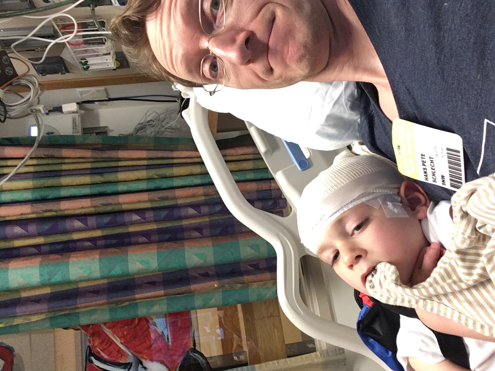

Join us for engaging discussions about rare diseases, their treatments, and the human element that affects entire families.
To PodcastsJoin Dr. Hans on "Rare Diseases with Dr. Hans" where the world of rare diseases comes into focus. Dr. Hans dives deep into the stories behind uncommon conditions, exploring cutting-edge research, breakthrough treatments, and the inspiring journeys of patients and their families. With expert guests and insightful discussions, "Rare Diseases" sheds light on the mysteries of rare diseases and brings hope to those navigating these challenging conditions. Tune in for a blend of science, empathy, and innovation that makes the rare more understandable and accessible.

Dr. Hans Schlecht trained in Internal Medicine and Infectious Diseases at Beth Israel Deaconess Medical Center and completed a Clinical Investigator Training Program with a Masters in Medical Sciences from Harvard/MIT Health Sciences and Technology. He is a parent to a son with SYNGAP1 deficiency and since March 2017, an advocate for advancing the care and research for this rare disease.
A touching insight into the origin of Dr. Hans' interest in rare diseases and how it touches his family.